The operational workflow opens with RFP Intake & Opportunity Registration. This playbook details the hands-on mechanics behind that step — finding signals in Starbridge, deciding whether an opportunity already lives in CRM, creating leads and bid cases in Dynamics 365, and spinning up contract cases — captured screen-by-screen from the 2026 B&P SOP.
↖ Returns to “RFP Intake” on the main chartLog in to Starbridge and open Bridges from the left-hand ribbon, then select the BP-US Playground RFP Opportunities bridge. What's listed are all the signals — i.e. RFP opportunities — that might be applicable to Kompan.
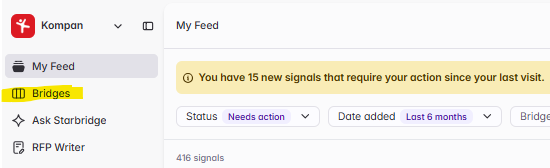
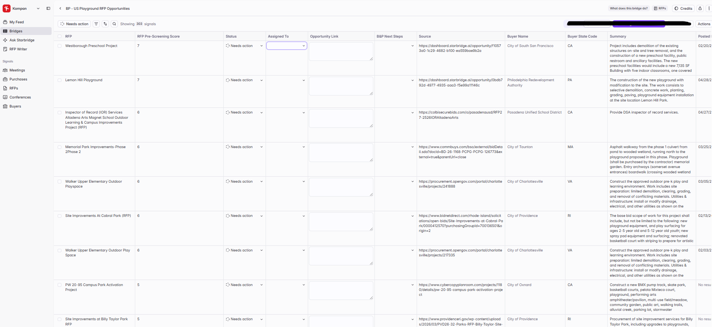
Prioritize signals by RFP Pre-Screening Score, then review each project summary. A higher score doesn't necessarily mean a valid opportunity — vet every signal at a high level before actioning.
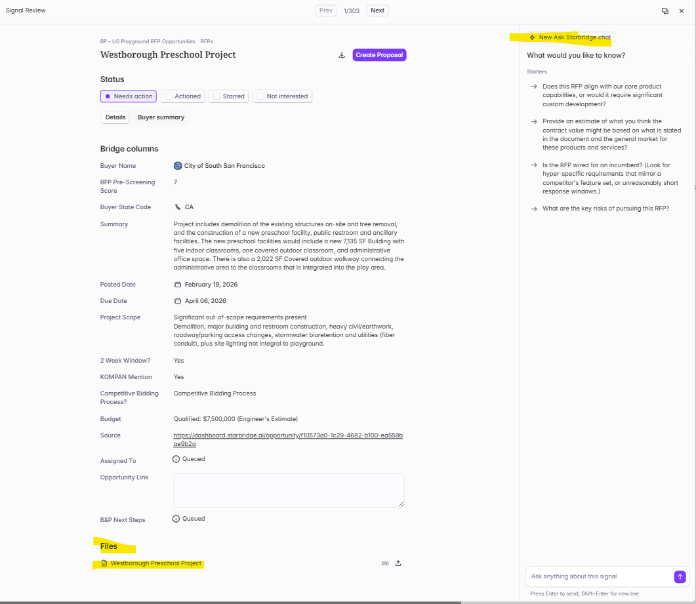
Claim the signal in Starbridge so the team knows it's being worked, then create the link within Dynamics 365 (CRM).
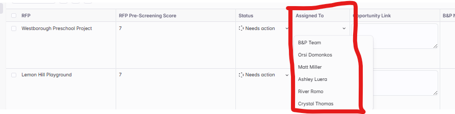
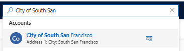
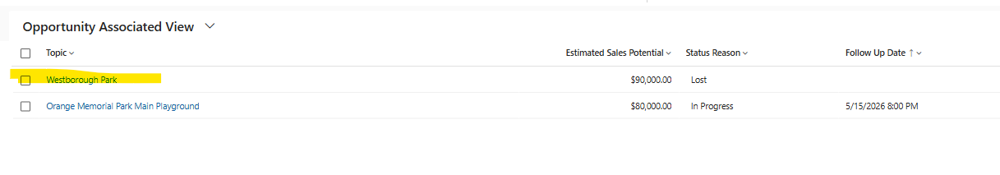
Open the Opportunity and update the Buying Process field.
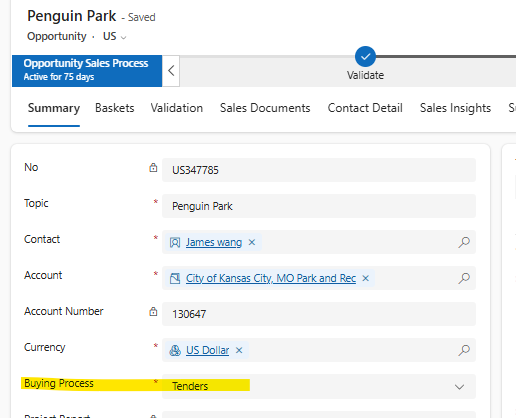
File map: Presales › Bid › Bid Documents.
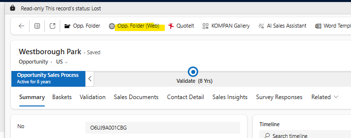
The Analyst assigns themselves to the Coordinator-created case on the B&P Dashboard.
Open the Account (Buyer Name in Starbridge), scroll down-right, and add a New Lead.
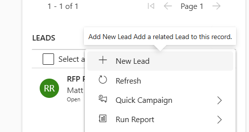
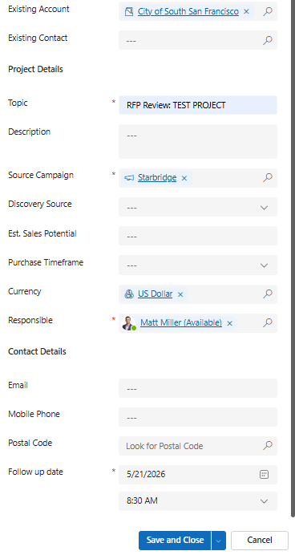
Create a post with the RFP and any other pertinent information.
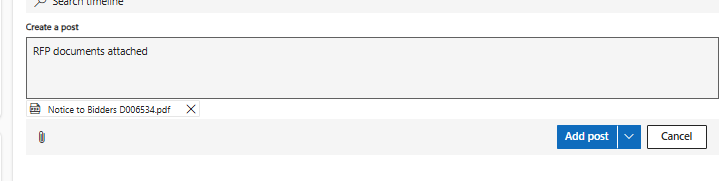
The Lead appears on the B&P Dashboard. The Analyst reviews within 3 business days and assigns themselves as Responsible. If it's a GO from the DSR, select Qualify Lead.
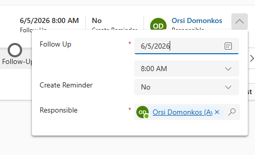
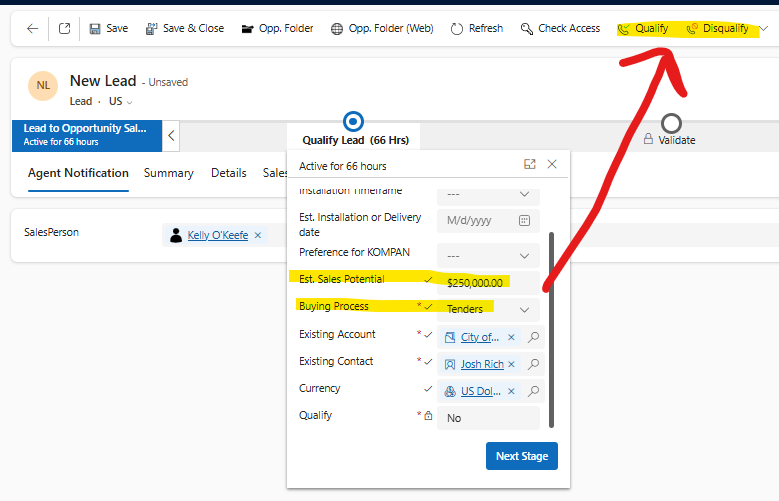
Click the “+” sign in the top bar to open Quick Create: Case.
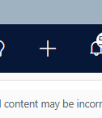
Complete every field marked with an asterisk — Account, Case Title, Group, Type, Assign to Others — and add a Description.
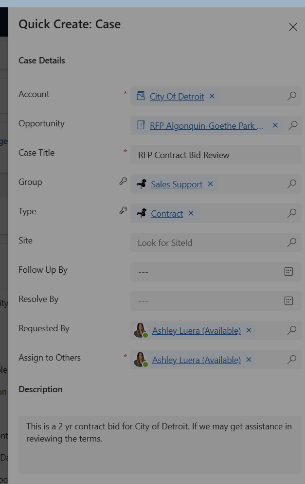
Open the Box folder via Opp. Folder (Web). File map: Presales › Bid › Bid Documents. Then share the link on the timeline.
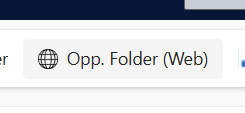
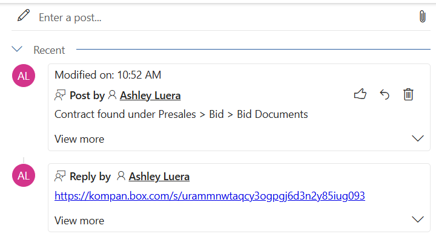
Advance the case to the Prepare stage. PC won't see the case until it has been pushed to this stage.
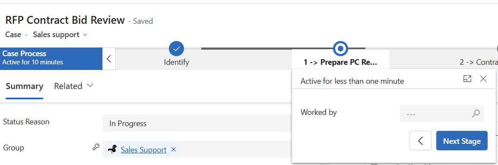
Set the Resolve By date (and Follow Up By) on the case.
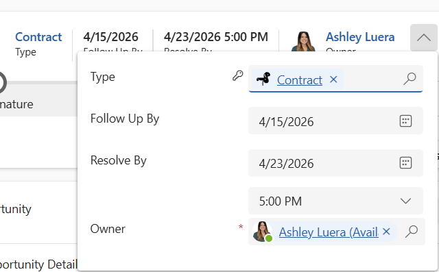
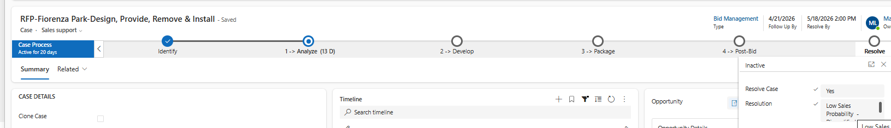
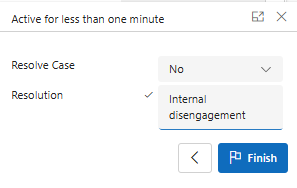
Pick the code that best fits why the bid was disqualified.